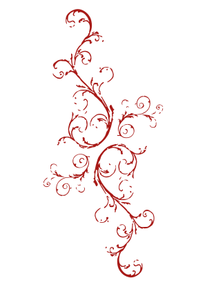

Frida in het kort

Frida kahlo is de bekendste Mexicaanse kunstenaar, ze staat bekend om haar kleurrijke schilderijen en zelfexpressie. Frida was voor haar tijd vooruitstrevend, ze eiste haar plek in de wereld op doormiddel van haar kunst, kleding en identiteit. Haar kunstwerken zitten vol met symboliek, ze creëerde haar eigen werelden rondom thema’s als pijn, liefde, politiek, gender. Zelfs tot vandaag heeft zij nog veel invloed in de kunstwereld.
